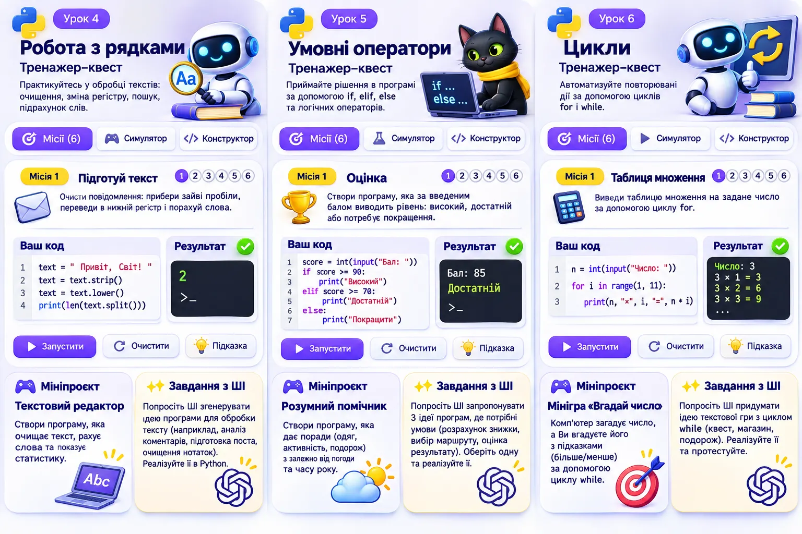

Start Python · Тренажер 6
🚦 Коротке розгалуження: if
Розробіть консольного помічника підготовки до поїздки.
6 життєвих місій, конструктор, симуляція, мініпроєкт і ШІ-виклик.

🎯 Конструктор і квест: 6 місій
Складіть код
Натискайте команди в потрібному порядку. Для if збережіть відступи.
Симуляція виконання
Рядки програми
🔮 Прогнозування
Передбачте результат програми з поточної місії. Введіть відповідь і порівняйте.
🛠 Мініпроєкт «Розумний помічник»
Ситуація. Перед виїздом на екскурсію учасники забувають перевірити погоду й заряд телефона. Організатору потрібна проста пам’ятка, яка може показати обидва нагадування одночасно.
Завдання для розробника. Розробіть консольного помічника підготовки до поїздки.
Що має робити програма:
- Запитайте температуру й заряд телефона у відсотках. Для перевірок використовуйте цілі числа.
- Якщо температура нижча за 10, покажіть нагадування про теплий одяг. Якщо заряд нижчий за 20, порадьте зарядити телефон. Використайте два незалежні if.
Як перевірити результат. За температури 5 і заряду 10 мають з’явитися два нагадування; за 15 і 10 - лише про заряд; за 10 і 20 - жодного з цих попереджень.
Для запуску довільного Python-коду використайте редактор Python. Ця сторінка не виконує введений код.
✨ ШІ-виклик
Складіть промпт для генерації власної програми, перевірте результат ШІ та внесіть покращення.